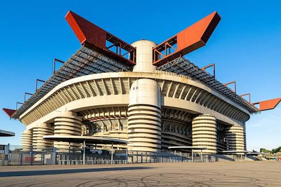
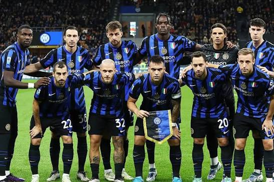

Founded
1908
Italy
Discover the history, stadium, legendary players, major trophies, records, and interesting facts about Inter Milan.
Introduction
Inter Milan, officially known as Football Club Internazionale Milano, is a professional soccer club based in Milan, Italy. Founded in 1908, Inter has become one of the most successful clubs in Italian soccer and has also achieved major success in European competition.
Inter plays its home matches at the San Siro, officially named Stadio Giuseppe Meazza. The stadium is shared with city rival AC Milan and is one of the most famous soccer stadiums in the world. It has hosted major domestic, European, and international matches.
Inter is famous for its blue and black striped shirts. The club is commonly known as the "Nerazzurri," which refers to those colors in Italian. Inter's badge, uniforms, and colors have become recognizable to soccer supporters around the world.
Many legendary players have represented Inter, including Giuseppe Meazza, Sandro Mazzola, Giacinto Facchetti, Javier Zanetti, Lothar Matthäus, Ronaldo Nazário, Wesley Sneijder, Diego Milito, Samuel Eto'o, and many others.

About the Club
Inter Milan was founded on March 9, 1908, after a group separated from the Milan Cricket and Football Club, which later became AC Milan. The founders wanted a club that would welcome international players, which influenced the name "Internazionale."
Inter quickly became successful in Italian soccer. The club won its first Italian championship in 1910, only two years after being founded. Another league championship followed in 1920 as Inter continued establishing itself as one of Italy's major clubs.
Giuseppe Meazza became one of the most important players in Inter's early history. He was a remarkable goalscorer and helped the club win championships while also becoming a star for the Italian national team. The San Siro stadium's official name later became Stadio Giuseppe Meazza in his honor.
One of Inter's greatest periods came during the 1960s under manager Helenio Herrera. The team became known as "Grande Inter" because of its domestic and European success. Players such as Sandro Mazzola, Giacinto Facchetti, and Luis Suárez Miramontes became major figures during this era.
Inter won consecutive European Cups in 1964 and 1965. The club also won Serie A championships and Intercontinental Cups during the same period. These accomplishments established Inter as one of the strongest clubs in world soccer.
Inter remained competitive during later decades and added more domestic and European trophies. German star Lothar Matthäus helped Inter win the 1988-89 Serie A championship and later won the Ballon d'Or while representing the club.
During the 1990s, Inter became especially successful in the UEFA Cup. The club won the competition in 1991, 1994, and 1998. The 1998 team included Brazilian superstar Ronaldo Nazário, one of the most exciting attacking players of his generation.
Another historic period arrived under manager José Mourinho. During the 2009-10 season, Inter won Serie A, the Coppa Italia, and the UEFA Champions League. The achievement made Inter the first Italian club to complete the continental Treble.
Inter defeated Bayern Munich 2-0 in the 2010 Champions League final, with Diego Milito scoring both goals. Players such as Javier Zanetti, Wesley Sneijder, Samuel Eto'o, Esteban Cambiasso, and Júlio César were important members of that historic team.
Inter later returned to the top of Italian soccer, winning Serie A in 2020-21 and again in 2023-24. The 2023-24 championship was especially memorable because it gave Inter its 20th Italian league title and allowed the club to add a second star above its badge.

Club Details
1908
Milan, Italy
San Siro
Blue and Black
Club Record
Giuseppe Meazza is Inter Milan's all-time leading goalscorer with 284 official goals. Meazza spent most of his career with Inter and became one of the greatest Italian soccer players of his generation.
His importance to soccer in Milan is reflected in the official name of the San Siro stadium, Stadio Giuseppe Meazza. He also helped Italy win the FIFA World Cup in both 1934 and 1938.
Success
Legendary Players
Inter Milan has had players win the Ballon d'Or while representing the club.
Matthäus won the award after an outstanding year that included helping West Germany win the 1990 FIFA World Cup. Ronaldo won in 1997 after joining Inter and becoming one of the most dangerous attacking players in world soccer.
Did You Know?